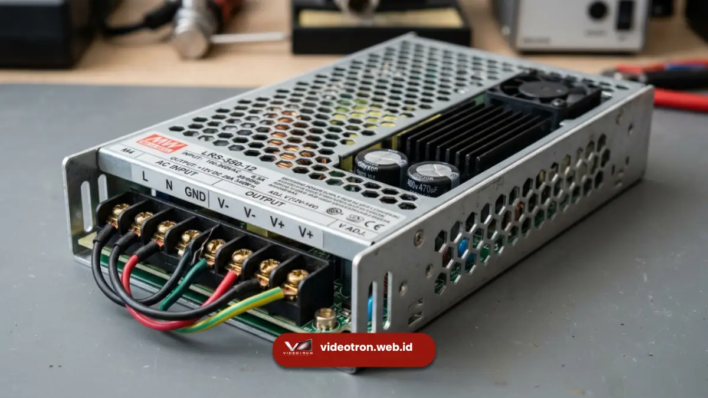

Konsumsi daya videotron dihitung berdasarkan watt puncak dan watt rata-rata per meter persegi, yang dipengaruhi oleh tingkat kecerahan dan pixel pitch. Perhitungan yang tepat mencegah kekurangan daya listrik saat videotron beroperasi penuh.
Poin Kunci Perhitungan Daya:
- Watt puncak adalah konsumsi daya maksimum saat videotron menampilkan warna putih penuh.
- Watt rata-rata adalah estimasi konsumsi daya harian yang lebih realistis untuk perencanaan listrik.
- Tingkat kecerahan dan pixel pitch memengaruhi besar kecilnya kebutuhan daya per meter persegi.
- Kapasitas instalasi listrik gedung perlu disesuaikan dengan watt puncak, bukan hanya watt rata-rata.
- Perhitungan daya yang tepat mencegah gangguan operasional dan risiko pada sistem kelistrikan.
- 1. Apa Perbedaan Watt Puncak dan Watt Rata-Rata pada Videotron?
- 2. Bagaimana Cara Menghitung Kebutuhan Daya Videotron per Meter Persegi?
- 3. Faktor Apa Saja yang Memengaruhi Besarnya Konsumsi Daya Videotron?
- 4. Apa Risiko Jika Kapasitas Listrik Videotron Tidak Mencukupi?
- 5. Kesimpulan dan Konsultasi Gratis
Apa Perbedaan Watt Puncak dan Watt Rata-Rata pada Videotron?
Watt puncak adalah konsumsi daya maksimum videotron saat menampilkan warna putih penuh di seluruh layar, sedangkan watt rata-rata adalah estimasi konsumsi daya dalam kondisi tampilan konten sehari-hari yang bervariasi warnanya.
Watt puncak biasanya jauh lebih tinggi dibandingkan watt rata-rata karena tidak semua titik LED menyala pada intensitas maksimum secara bersamaan saat menampilkan konten normal.
Meski begitu, watt puncak tetap menjadi acuan penting saat merencanakan kapasitas instalasi listrik, karena kondisi ini dapat terjadi sewaktu-waktu tergantung konten yang ditampilkan.
Watt rata-rata lebih relevan digunakan untuk memperkirakan biaya listrik bulanan, sementara watt puncak digunakan untuk memastikan kapasitas panel listrik dan kabel yang terpasang aman dari risiko overload.
Bagaimana Cara Menghitung Kebutuhan Daya Videotron per Meter Persegi?
Kebutuhan daya videotron per meter persegi dihitung dengan mengalikan luas total layar videotron dengan angka konsumsi daya per meter persegi yang tertera pada spesifikasi modul LED yang digunakan.
Setiap tipe modul LED memiliki angka watt puncak dan watt rata-rata per meter persegi yang berbeda, tergantung pixel pitch dan tingkat kecerahannya.
Untuk mendapatkan estimasi total kebutuhan daya, angka tersebut dikalikan dengan luas keseluruhan videotron yang akan dipasang, kemudian ditambahkan margin pengaman untuk mengantisipasi fluktuasi beban listrik.
Selain luas dan spesifikasi modul, penting juga mempertimbangkan efisiensi power supply yang digunakan, karena tidak seluruh daya yang ditarik dari sumber listrik dikonversi secara sempurna menjadi daya yang digunakan modul LED.
Faktor Apa Saja yang Memengaruhi Besarnya Konsumsi Daya Videotron?
Konsumsi daya videotron dipengaruhi oleh tingkat kecerahan, pixel pitch, jenis konten yang ditampilkan, serta efisiensi power supply yang digunakan dalam sistem.
Videotron dengan tingkat kecerahan tinggi, seperti yang digunakan untuk instalasi outdoor, umumnya mengonsumsi daya lebih besar dibandingkan videotron indoor dengan kecerahan lebih rendah.

Unit power supply berdaya tinggi yang mengatur distribusi voltase dan stabilitas konsumsi energi videotron.Pixel pitch yang lebih kecil juga cenderung meningkatkan konsumsi daya karena jumlah titik LED per meter persegi menjadi lebih banyak.
Jenis konten yang ditampilkan turut berpengaruh, karena konten dengan dominasi warna terang membutuhkan daya lebih besar dibandingkan konten dengan warna gelap.
Faktor-faktor ini sebaiknya dipertimbangkan bersama saat merencanakan kapasitas listrik untuk instalasi videotron.
Apa Risiko Jika Kapasitas Listrik Videotron Tidak Mencukupi?
Kapasitas listrik yang tidak mencukupi dapat menyebabkan videotron mengalami penurunan kecerahan, gangguan tampilan, hingga kerusakan pada komponen power supply akibat beban yang tidak sesuai.
Instalasi listrik yang hanya dihitung berdasarkan watt rata-rata tanpa mempertimbangkan watt puncak berisiko mengalami kekurangan daya saat videotron menampilkan konten dengan intensitas warna tinggi secara bersamaan.
Kondisi ini dapat memicu pemadaman otomatis pada sistem proteksi listrik atau bahkan kerusakan permanen pada perangkat.
Untuk menghindari risiko tersebut, perhitungan kapasitas listrik gedung sebaiknya selalu mengacu pada watt puncak dengan tambahan margin pengaman, bukan hanya estimasi konsumsi harian semata.
Kesimpulan dan Konsultasi Gratis
Menghitung konsumsi daya videotron dengan tepat, baik watt puncak maupun watt rata-rata, adalah langkah penting agar instalasi berjalan aman dan efisien secara jangka panjang.
Pastikan kapasitas listrik gedung Anda telah disesuaikan dengan spesifikasi videotron sebelum proses instalasi dilakukan.
Ingin memastikan kapasitas listrik gedung Anda sesuai kebutuhan videotron?
Konsultasikan perhitungan daya bersama tim teknis kami sebelum instalasi dimulai.

Hawa Nadira
LED Technology Consultant dan Visual Educator
Konsultan dan spesialis solusi display digital berdedikasi tinggi yang fokus membagikan panduan edukatif mengenai penerapan teknologi layar LED videotron untuk kebutuhan interior modern di Indonesia.